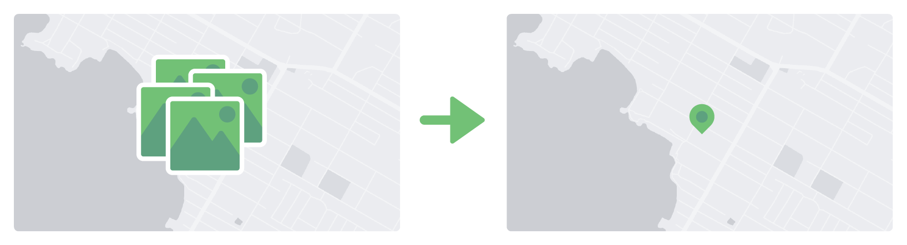

Local Ground Redesign
Overview
Local Ground is an open source tool for creating map visualizations and stories. I am redesigning the UI from beginning to end. This process includes user research, wireframing, visual and UX design, and HTML/CSS/JavaScript prototyping.
Existing map making platforms either support qualitative (photos, writing, audio, drawings), or quantitative (numerical) data. With Local Ground, users can combine these data types, resulting in more powerful storytelling and a deeper understanding of the problem space. Our user groups include community organizations and grade school classrooms.
Heuristic Evaluation + Research
Since Local Ground already exists, I started the redesign by researching the existing use cases, speaking with team members, and conducting a heuristic evaluation. I also conducted competitive research in order to better define Local Ground as a product and to understand common UI patterns. My findings include the following:
- Increase Accessibility: The existing Local Ground UI was modeled after the database representation of data. While this can be useful pedagogically, it presents a high barrier to entry and excludes some users.
- Market Opportunity: Map making tools fall under one of the following categories: quantitative and powerful, and story/visuals oriented. We have the unique opportunity and challenge to straddle these two spaces. The former systems tend towards technical power users, while the latter are easy to learn and use.
Wireframing
When I felt comfortable with the existing product and landscape, I began to create wireframes in Sketch to communicate my suggestions, which included the following large structural changes:
- Support media and browsing better: Move the description/media display to panel on the left instead of a popover. The popover supports short descriptions well, but long descriptions obscured the map. The left panel also achieves our goal of foregrounding media and content.
- Clean up map: Initially, media were plotted on the map as their media type. This meant that multiple photos for a single location might be stacked on top of each other as individual instances. Since the photo thumbnails were used for the map pins, this created additional visual confusion. I proposed requiring each photo to be contained in a site in order to be plotted on the map.
- Use "Projects" to organize: In the existing version, users switch between projects by turning on and off datasets, and the map preferences (such as map skin and center) are saved as cookies. I recommended making a separate page for each project to better facilitate work on a single project and fit common mental models.
Choosing a Prototyping Tool
Once our team had aligned on the structure of the site, I began to prototype the interaction details. I chose HTML/CSS/Javascript because I knew that prototyping software becomes slow and difficult to use with complex systems, and because the CSS could be used in the implementation phase.
Initial User Testing
I recruited 5 users for our first round of testing. Research sessions included an interview on previous exposure to map making software and Local Ground, and then a series of tasks. Our main findings included the following:
- Improved workflow: Overall, users who had experience with the old design found that the new design better foregrounded the tasks they needed to complete.
- Fix Terminology: We confirmed that some of our labeling terminology was confusing. While this design improved on the previous version, where icons were unlabeled, I began to conduct additional research on mapping and GIS terminology for inspiration.
Iterations and Visual Desgin
Once we had validated the overall structure of the site, I started to prototype interaction details and iterate on the visual design. My team went out into the city of Berkeley and photographed public artwork. Using real data helps me design for the worst case scenarios, and resulted in an interesting mini project to present at the Local Ground workshop
The interaction design process involved research into components with similar functions. As a single person design team, I sought to optimize my resources by using common, well understood interaction patterns rather than developing new ones that I wouldn't be able to test thoroughly.
I used material design guidelines, including cards to guide the visual design. In to foreground user content and avoid pandering to younger users, I used a simple, light, and modern color palette.
Below are some pages from the current iteration of the prototype
Next Steps
I am currently running another round of user testing.